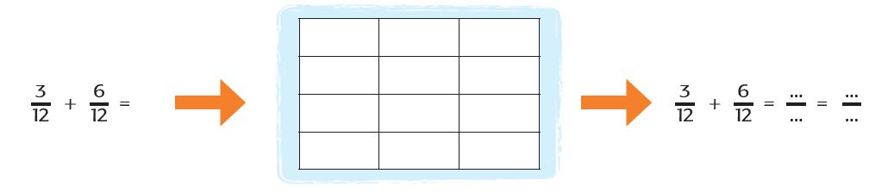
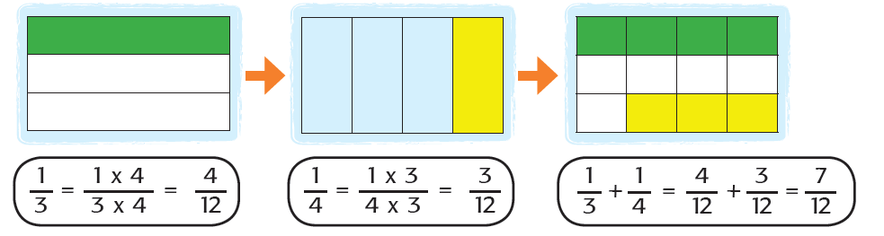
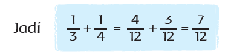
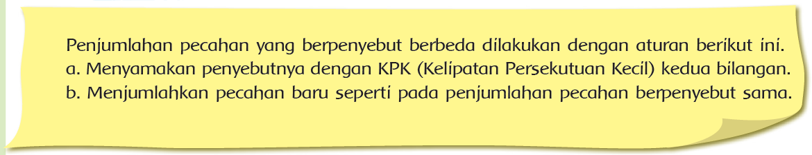

ayo belajar
Warnai kotak di bawah dengan warna berbeda sesuai dengan operasi hitung
penjumlahannya, kemudian tuliskan hasilnya.

Lalu bagaimana bila operasi penjumlahan pecahan tersebut berpenyebut berbeda?
Lihat contoh berikut.
1/3 + 1/4 =


